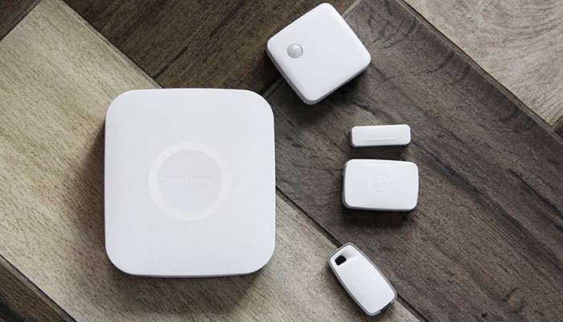

Технология Samsung SmartThings позволяет создавать элементы «умного дома», используя привычные гаджеты.
SmartThings поддерживает устройства для домашних локальных сетей, подключаясь к роутеру с помощью Wi-Fi или проводного соединения, а также широко используемых стандартов беспроводной связи ZigBee и Z-Wave. Таким образом, хаб может «разговаривать» почти с любым устройством, доступным сейчас на рынке.
Особенность SmartThings в том, что оно работает не только с устройствами Samsung. Сегодня на рынке представлено еще около 40 брендов, которые выпускают гаджеты, совместимые с этой технологией. Приложение поддерживает добавление любых новых устройств с надписью Works with SmartThings.
SmartThings доступно и на часах Gear S. Их можно настроить так, чтобы получать уведомления о действиях, совершаемых с каждым «умным» устройством: например, узнать, когда сработала сигнализация или в какое время вернулся ребенок из школы. С запястья можно также активировать базовые команды.
Конечно, остаётся много приборов, которые SmartThings не поддерживает. Но одно из его главных преимуществ – развитое пользовательское сообщество разработчиков и хакеров. Поэтому даже если продукт официально не поддерживает открытую систему Samsung (например, умный термостат Google Nest), то с большой вероятностью будет разработан какой-либо обходной путь. Такие решения зачастую бывают сложными для практического использования, но для этого существуют обучающие материалы (доступные в сети) и множество вспомогательных инструментов.

Преимущества:
•
Простота установки;
•
Поддержка разных платформ;
•
Качественное приложение;
•
Развитое сообщество разработчиков;
•
Поддержка многих стандартов в одном устройстве;
•
Возможность усовершенствования уже имеющейся системы;
•
Адаптивность.
Недостатки:
•
Недостаточная универсальность;
•
Обходные пути для «неродных» устройств могут вызвать трудности у неопытных пользователей;
•
Интернет вещей пребывает ещё на очень ранней стадии развития.
(Термин «интернет вещей» предполагает объединение обычных с виду приборов в сеть, которая становится чем-то большим, чем просто сумма составляющих элементов.)
Платформы для реализации умного дома: ◊ Yandex ◊ Ростелеком ◊ Rubetek ⚙ На главную ◄ REDMOND